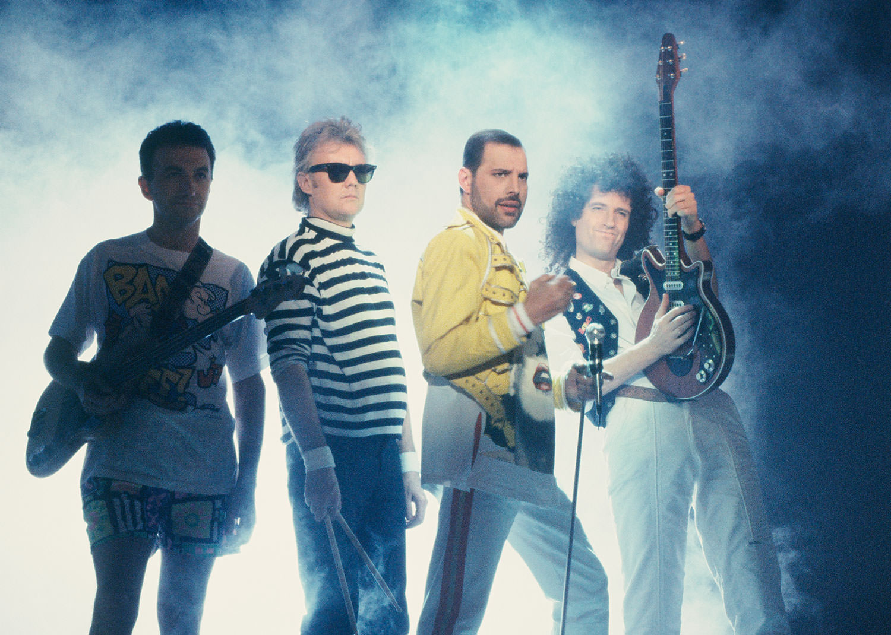

QUEEN
Queen se formó en 1970. En 1973 firmaron su primer contrato para grabar con EMI. Ese mismo año, lanzaron su álbum debut, Queen, y tuvieron su primera gran gira. En 1974 lanzaron Queen II e hicieron su primera gira como banda principal. También en ese año, hicieron su primera gira por EEUU, y durante el mes de noviembre lanzaron Sheer Heart Attack, que fue un éxito en ambos lados del Atlántico. En 1975 publicaron el álbum A Night At The Opera, y el importante sencillo, Bohemian Rhapsody. Con una duración total de 5’ 55”, este track era demasiado largo para ser un éxito en la radio, sin embargo, se convirtió en uno de los más grandes sencillos de todos los tiempos, permaneciendo en la posición núm. 1 en los charts del Reino Unido por nueve semanas. El video, dirigido por Bruce Gowers, es conocido como el primer video para fines genuinamente promocionales. La canción constantemente se incluye en las principales encuestas populares y ha sido nombrada de nuevo como el mejor sencillo de todos los tiempos, recientemente. El éxito de A Night At The Opera fue igual de impresionante, otorgando a la banda su primer disco de Platino. En 1976 hicieron gira por EEUU y Japón, y durante la primavera, sus cuatro álbumes estaban en el top 20 de las listas británicas. Más adelante, en ese mismo año, publicaron A Day At The Races, y dieron un concierto gratuito en Hyde Park, ante una audiencia de 200,000 fans aproximadamente. El álbum fue un gran éxito, con pedidos por anticipado de más de 500,000 unidades. Durante el siguiente año, hicieron dos grandes giras por EEUU y lanzaron su sexto álbum, News Of The World, y el legendario sencillo doble, We Will Rock You y We Are The Champions.

A finales de los años 70 y durante los 80, Queen consolidó su éxito mundial. En 1978 lanzaron Jazz, que incluyó el éxito Bicycle Race. En 1979 publicaron su primer álbum en vivo, Live Killers. En 1980 lanzaron The Game, que fue un gran éxito comercial, especialmente en Canadá. De este disco destacó Another One Bites The Dust, su sencillo más vendido en EE.UU. Ese mismo año publicaron la banda sonora de Flash Gordon. En 1981 realizaron giras históricas por Sudamérica, reuniendo a 131,000 personas en São Paulo. También lanzaron Greatest Hits, que se convirtió en uno de los discos más exitosos en el Reino Unido. En 1984 publicaron The Works, con éxitos como Radio Ga Ga e I Want To Break Free. En 1985 destacaron en el festival Rock in Rio y en el concierto benéfico Live Aid en Wembley, un momento clave en su carrera. En 1986 lanzaron A Kind Of Magic, banda sonora de Highlander, seguido por Live Magic. Entre 1989 y 1991 publicaron The Miracle, Innuendo y Greatest Hits II, todos alcanzando el número uno en el Reino Unido, consolidando su estatus como una de las bandas más exitosas del mundo.
